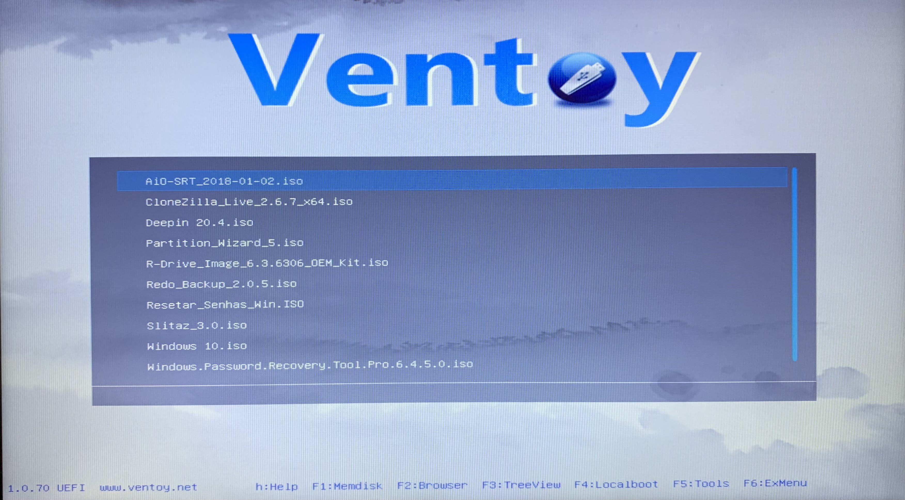

Entrando na BIOS do Seu Computador
Na BIOS você pode configurar várias questões relacionadas ao seu computador, aqui apenas estarei ajudando a alterar a ordem de inicialização do seu computador para entrar na sua mídia bootável e fazer a instalação dos Sistemas Operacionais. Esse processo pode variar de computador para computador. Aqui eu usei o notebook Acer Aspire 3 versão de 2020.
-
Quando você clicar no botão de ligar do seu computador, logo em seguida fique apertando a tecla para entrar na BIOS, essas teclas podem variar de um para o outro (aqui é o F2), para saber qual tecla para entrar na sua BIOS, consulte no site do fabricante.
Feito isso essa será a primeira tela que irá aparecer (reforçando, esse é apenas um exemplo, dependendo da sua placa mãe essa tela pode mudar). Nela você possui algumas características do seu computador e outros atributos.

-
No menu superior vá até "boot".

-
Chegando aqui vá para "Boot priority order" e deixe a sua mídia bootável em primeiro lugar.
-
Então siga para "Exit" e clique em "Exit Saving Changes" e pronto agora basta esperar sua mídia inicializável entrar na tela do Ventoy. Clique aqui para fazer uma mídia bootável usando o Ventoy.

-
Feito isso basta selecionar sua ISO e instalá-lo em seu computador.
